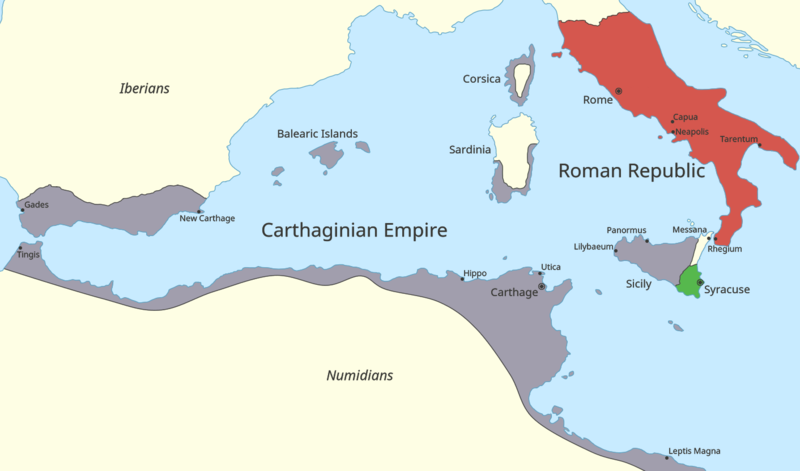

Carthage
Founded by the Phoenicians, Carthage is an extensive archaeological site, located on a hill dominating the Gulf of Tunis and the surrounding plain. Metropolis of Punic civilization in Africa and capital of the province of Africa in Roman times, Carthage has played a central role in Antiquity as a great commercial empire. During the lengthy Punic wars, Carthage occupied the territories that belonged to Rome, which then destroyed its rival in 146 AD. The town was rebuilt by the Romans on the ruins of the ancient city.
The Punic Wars
The Punic Wars was a series of wars between 264 and 146 BC that were fought between Rome and Carthage. The First Punic War broke out on the island of Sicily in 264 BC. It was regarded as "the longest and most severely contested war in history" by the Ancient Greek historian Polybius.[1] The fighting, which consisted predominantly of naval warfare, largely took place on the waters of the Mediterranean surrounding Sicily. Click on the image to discover more about this historical event
